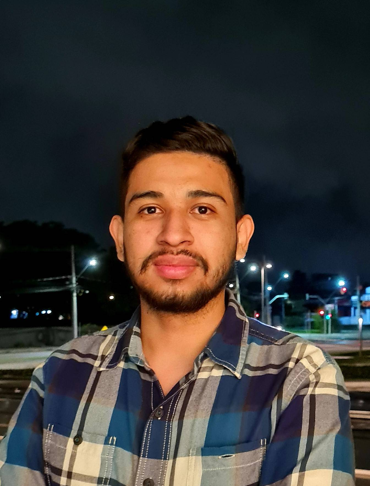

About Me
Hi! My name is Guillermo Mendoza and I'm from El Salvador, but I currently live in Fortaleza, Brazil. I have lived in Brazil for 4 years, I lived in the cities of São Paulo, Curitiba and now I live in Fortaleza. I have been married to Amanda for 1 year. I am a commercial analyst at a fraud prevention company. Since I was a child, I have been passionate about aircraft and everything related to aviation, I studied airplane mechanics for this same reason. I served a mission in the south of Guatemala City from January 2016 to January 2018, currently serving as first counselor of the elders quorum. I hope to be able to work as a web programmer in the company I currently work for.
Fortaleza, Brazil
Fortaleza is the capital of the state of Ceará, in the Brazilian Northeast. The city is known for its beaches, with red cliffs, palm trees, dunes and lagoons. The city's folk traditions can be seen in dance performances at Theatro José de Alencar, an art nouveau building opened in 1910. Another modern highlight is the Metropolitan Cathedral, in neo-Gothic style.